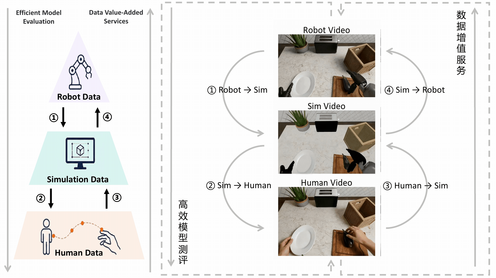
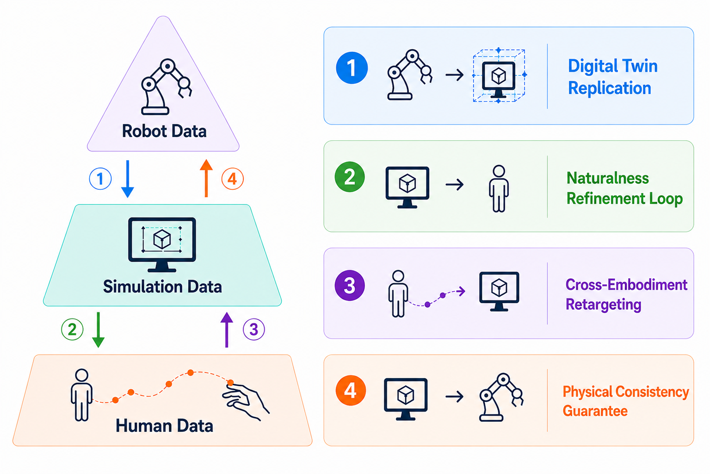
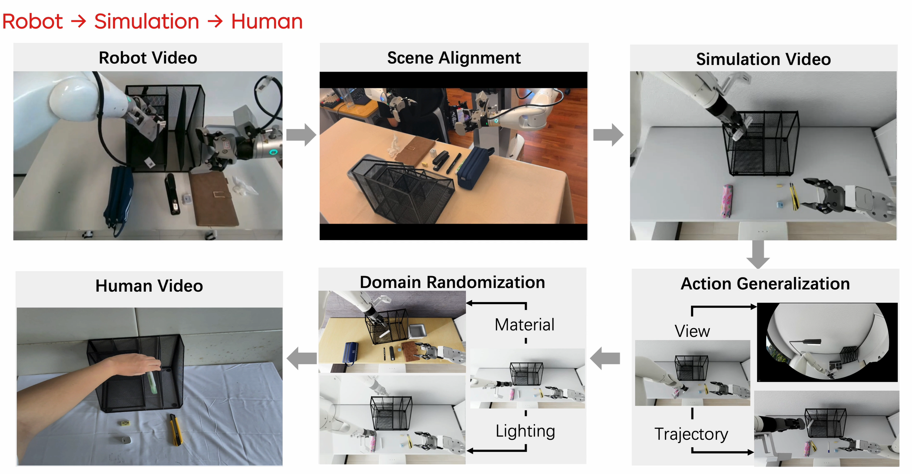
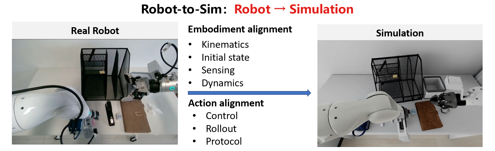
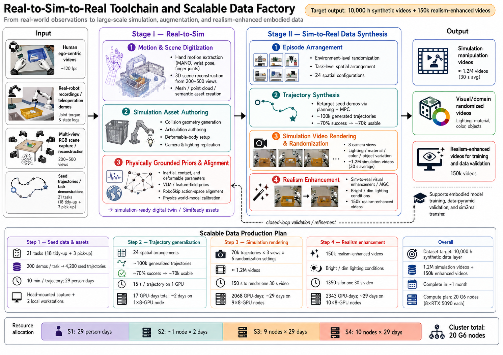

2026 年 04 月 16 日
JoyAI-Sim
面向具身数据金字塔的仿真转换工具链，一站式实现具身数据的增值转换与泛化扩增。
试用 JoyBuilder
JoyAI-Sim 框架
技术报告 JoyAI-Sim 针对具身领域广泛存在的测评效率与数据瓶颈问题，结合数据金字塔提出 Robot ⇌ Simulation ⇌ Human 仿真数据转换工具链。它一端连接稀缺但贴近真实部署的机器人数据，另一端连接丰富但与本体无关的人类数据，最终实现数据与评测的双向贯通。
JoyAI-Sim 同时支持金字塔自顶向下的 Robot → Simulation → Human 高效模型测评服务，以及金字塔自底向上的 Human → Simulation → Robot 数据增值服务。通过京东云 JoyBuilder 平台，开发者可以获得一站式的具身仿真服务。

基于仿真工具链的高效模型测评
通过 Robot → Simulation → Human 的仿真工具链，JoyAI-Sim 可实现比真机测评更加高效的模型测评。系统以真实机器人任务定义部署目标，借助数字孪生完成可规模化的仿真评测与轨迹合成，并引入人类具身反馈检验仿真动作的自然度，构建贯通“真机测评—仿真测评—人类感知”的闭环评测链路。
Robot → Simulation 阶段以真实机器人任务为锚点，将任务语义、物体资产、场景布局、机器人本体、相机配置、控制接口和成功判据映射到数字孪生中，形成可复现、可并行、可诊断的仿真评测环境。JoyAI-Sim 综合运用 3D 重建技术构建面向家居场景的 Sim-Ready 资产库，覆盖 295 个细粒度类别、53,661 个资产实例，并支持在多个仿真器中对机器人状态、物体布局、实例变化、背景、语言和光照等维度进行所见即所得的调整。
Simulation → Human 阶段在仿真中通过 FSM+IK、IKFlow 和强化学习生成或扩增机器人轨迹，并进一步引入人类具身反馈评估轨迹自然度。人类操作者通过模拟执行仿真轨迹，识别接近策略、阶段过渡和动作流畅性中的不合理模式，从而筛除虽然物理可行但不符合人类运动直觉的轨迹。


基于仿真工具链的数据增值服务
通过 Human → Simulation → Robot 仿真工具链，JoyAI-Sim 以第一人称人类示范视频作为数据源，借助手部运动恢复、场景重建与数字孪生构建，将原本与机器人本体无关的人类行为转化为可在仿真中执行和验证的任务。
Human → Simulation 阶段从人类第一视角视频中提取手部轨迹、抓取/释放事件、物体交互关系与场景几何结构，并构建仿真可执行的数字孪生环境，使人类视频从单纯视觉记录转化为带有空间结构、交互关系和任务语义的仿真实例。
Simulation → Robot 阶段在仿真环境中完成机器人本体适配与物理可行性验证，筛除关节越界、碰撞、不可达和接触不合理的动作；同时通过改变物体位置、容器布局、物体组合、颜色材质、光照和背景等因素，从同一条人类示范派生出多样化但仍物理可行的机器人轨迹与观测视频。

视频素材补充
新增素材覆盖真实机器人操作、平时遥操作记录、第一人称双目视频和人类示范样本，可用于展示 JoyAI-Sim 从任务定义、具身反馈到数据增值的不同证据层。
试用与体验入口
欢迎通过京东云 JoyBuilder 平台体验 JoyAI-Sim 具身仿真服务。平台提供仿真服务创建、管理、查看、连接、云端资产挂载、数据增强实践案例与数据交易入口，帮助开发者将仿真评测和数据增值流程接入真实研发工作。